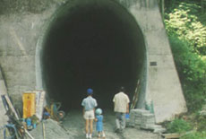

|
MOE NO SUZAKU (The God Suzaku)
Naomi Kawase | Japan 1997 | 95 min.
Material: 35mm
Format: 35mm
Original language: Japanese
Script: Naomi Kawase
Camera: Masaki Tamura
Editing: Kakesu Shuichi
With Jun Kanimura, Machiko Ono, Sachiko Izumi, Kotaro Shibata
Production: WOWOW JapaSatellite Broadcasting, Bitters End Inc
Print/Sales: Seawell Films
Caméra d'Or Cannes 1997, FIPRESCI Award IFF Rotterdam 1998
www.kawasenaomi.com
The film is set in the beautiful and verdant mountain-top village, Nishiyoshino-mura in Nara, Kawase's home province. The town becomes partially abandoned, due to the effects of economic recession, but one family stays on. The head of the family, Tahara Kozo, becomes fixated by plans to build a tunnel to improve the accessibility of the area. Construction begins, but is halted halfway through. Fifteen years later building has still not restarted, and the family is destitute. Against this backdrop, some family affairs develop. Michiru starts to fall in love with Eisuke, who has been like a brother to her. Eisuke, meanwhile, finds himself attracted to his aunt.
Although Moe no Suzaku is a fictional story, Kawase has used some documentary techniques. The real town has lost many of its population, and also contains a partially completed tunnel. Kawase visited the town for years before making the film, and was helped during shooting by local people. Kawase also renovated an old farmhouse to act as the main set. – Cannes 1997
Naomi Kawase was born in Nara, 1969. She graduated from the Osaka School of Photography (currently the School of Visual Arts Osaka) in 1989 and has begun making films on 16mm and 8mm since her college days. Her work soon caught the spotlight both domestically and internationally. In 1997, Kawase became the youngest winner of the Camera d'Or Award in the history of Cannes Film Festival for her first feature "Suzaku". Kawase is also highly recognized for her accomplishments in documentary filmmaking.
Films (Selection): Moe no suzaku/The God Suzaku 1997 | Kya ka ra ba a/Sky, Wind, Fire, Water, Earth 2001 | Tsuioku no dansu/Letter from a Yellow Cherry Blossom 2003 | Mogari no mori/The Mourning Forest 2007 | Seven Nights 2008 | Koma 2009 | Genpin 2010
back
|